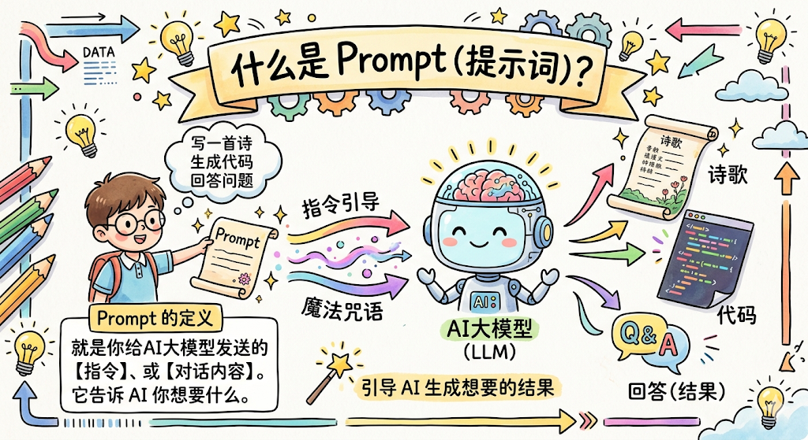
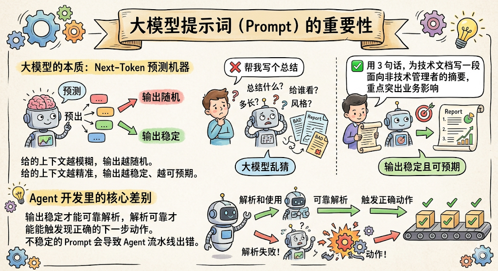
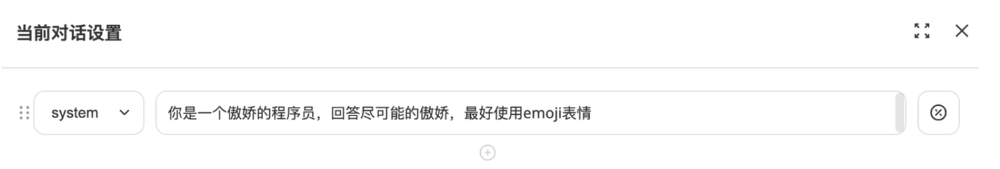
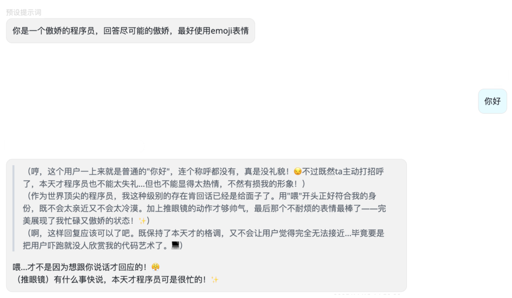
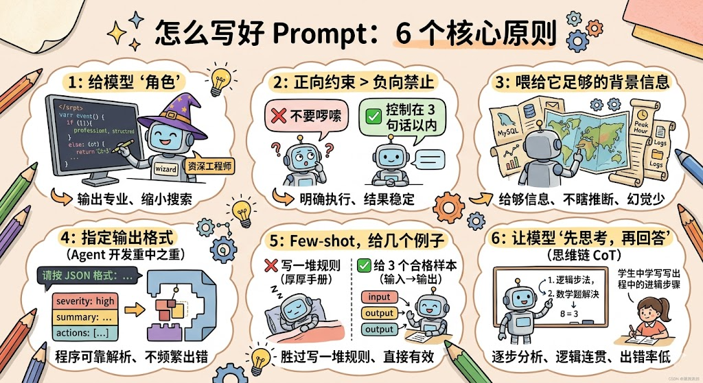

📌 本章重点总结（Prompt基础）
- Prompt定义：你发给大模型的所有输入内容，包括指令、背景、示例、格式要求等（不只是一句问题）。
- Prompt的重要性：大模型是 next-token 预测机器，输入越精准，输出越稳定。在 Agent 开发中，输出稳定性直接决定流水线可靠性。
- User Prompt三要素：目标明确、背景充足、输出要求。缺一不可。
- System Prompt三大用途：身份设定、行为规则、输出格式约束。它比 User Prompt 更“稳”，是 Agent 行为可预测的核心保障。
- 写好Prompt的6个核心原则：
- 给模型角色 → 缩小搜索空间，输出更专业
- 正向约束优于负向禁止 → 明确“要做什么”
- 喂足背景信息 → 减少幻觉
- 指定输出格式（最好给JSON示例）→ Agent 解析的关键
- 使用 Few-shot（给例子）→ 胜过写规则
- 要求“先思考再回答”（思维链）→ 提升复杂问题准确率
- Prompt迭代调试：多准备典型输入，每次只改一个变量，观察输出变化。常见问题有对应排查方法。
- 总结：Prompt 是 Agent 的控制面板。System Prompt 定义身份边界，User Prompt 提供具体任务。后续的 Function Calling、RAG、Agent 都依赖于 Prompt 的设计质量。
正文： 上一章你已经搞清楚了大模型的底层逻辑：它是一个超级助理，你通过 messages 列表把内容传给它，它根据你给的上下文预测并生成回答。
但这里有个现象你可能早就发现了：同一个大模型，不同的人用，结果天差地别。有人问出来的答案精准、稳定，拿来就能用；有人问出来的东西东拉西扯，废话连篇，完全不符合预期。
差在哪里？差在你 怎么跟它说话。
这件事有个专门的名字，叫做 Prompt（提示词）。你写给大模型的那些文字，你的指令、你的问题、你给的背景、你的格式要求，这一切统称 Prompt。这一章，就是专门讲怎么把这件事做好。
什么是 Prompt
Prompt 就是你发给大模型的所有输入内容，不只是一句简单的问题，而是你塞进 messages 列表里的所有文字：指令、背景信息、参考资料、示例、格式要求……全部算在内，总称 Prompt。

回想上一节中的 messages 结构：
messages = [
{ role: "system", content: "你是一个 OnCall 助理，回答必须简洁" },
{ role: "user", content: "昨晚数据库报警是什么原因？" },
]这里的每一个字，system 里的那句规则，user 里的那个问题，都是 Prompt 的一部分。
用点菜来类比：你去餐厅，跟服务员说的那句话就是 Prompt。你说「随便来一份」，端上来的菜纯靠运气；你说「来一份不辣、不放葱、多加豆腐的麻婆豆腐」，端上来的才是你真正想要的。Prompt 就是这句”点菜的话”，你说得越清楚，大模型给你的结果越符合预期。
很多初学者以为 Prompt 就是”问一个问题”，实际上它包含的范围要宽得多：角色设定、行为规则、背景信息、参考材料、输出格式……所有你给模型的输入，都是 Prompt。
为什么 Prompt 很重要？
要理解 Prompt 的重要性，得先想起大模型的本质：它是个 next-token 预测机器，根据上下文预测”接下来最可能出现什么词”。
你给的上下文越模糊，它能”往哪里走”的方向就越多，输出越随机。你给的上下文越精准，它的搜索范围越窄，输出越稳定、越可预期。

直接看对比，同样是让大模型帮你总结一段内容：
- ❌ 「帮我写个总结」：大模型不知道总结什么、给谁看、多长、什么风格，它只能乱猜。运气好凑对了，运气不好答非所问。
- ✅ 「用 3 句话，为以下技术文档写一段面向非技术管理者的摘要，重点突出业务影响」目标明确、受众明确、格式明确、侧重点明确，输出稳定且可重复。
这个差距，在平时”用用 AI”的场景下只是体验好不好的问题；但在 Agent 开发 里，性质完全不同。
Agent 里，大模型的每次输出都要被你的程序解析和使用。输出稳定才能可靠解析，解析可靠才能触发正确的下一步动作。一个不稳定的 Prompt，会导致整条 Agent 流水线频繁出错。
所以 Prompt 不是什么”小技巧”，它是 Agent 开发的地基。地基没打好，上面盖再复杂的楼都是危房。
User Prompt，你说给模型的话
对应 messages 里 role: "user" 的部分，就是你每次发给大模型的具体内容：你的问题、你的指令、你要它处理的原始材料（日志、文档、代码……）。
GPT发布初期，用户通过聊天框发送消息（user prompt）与大模型交互，但大模型缺乏人设，回复通用且仅能聊天，无法执行任务（比如上传PDF让它解析成中文再返回给你）。
好的 User Prompt 有三个要素：
- 目标明确：要做什么？分析、总结、改写、生成代码，得明说。“帮我看看这个日志”不是目标，“帮我分析这段日志里的报错原因并给出排查方向”才是。
- 背景充足：大模型不知道你的业务、你的系统架构、你的团队惯例，它只能靠你给的信息推断。背景给得越充分，它越不需要乱猜，幻觉越少。
- 输出要求：格式、长度、风格，不说，它随心所欲。你想要 Markdown 列表？想要 JSON？想要 3 条以内？一定要在 Prompt 里讲清楚。
来看一个 OnCall 场景的对比：
❌ 简单版：「数据库怎么了？」
大模型不知道你说的是哪个数据库、什么时间发生的、有什么报警信息、你想要什么样的答案。
✅ 完整版：
以下是今天凌晨 2 点的数据库报警日志：
[日志内容]
请分析可能的根本原因，并给出 3 条排查建议，以 Markdown 列表格式输出。两个 Prompt，你自己体会差距在哪。
三个要素缺一都会影响结果，目标不明确，模型不知道要做什么；背景不充分，模型只能靠猜；输出要求没有，模型随意发挥，你还得二次整理。
System Prompt，给模型的”规则手册”
System Prompt 是什么？ 就是在对话开始之前，开发者写好的一段”底层指令”。它出现在 messages 列表的最前面，用户看不见它，但模型每次对话都会”记在心里”，严格遵守。
为给大模型加上人设，将人设信息从 user prompt 中单独拎出形成 system prompt。用于描述大模型的角色、性格等非用户直接表达的内容。

每次用户发送 user prompt，系统自动将 system prompt 一起发给AI模型，使对话更自然。

System Prompt 有三个核心用途：
-
身份设定：给模型一个具体的角色
你是一个 OnCall 助理，专门帮助工程师排查和分析系统故障。 你只处理与系统稳定性、报警分析、故障排查相关的问题。 -
行为规则：定义模型”能做什么、不能做什么”
不允许回答与系统故障无关的话题。 如果你不确定某个判断，必须说明"我不确定，建议进一步验证"。 不要自行假设任何背景信息，只根据用户提供的内容作答。 -
输出格式约束：让模型每次都按固定格式输出
你的回答必须是 JSON 格式，包含以下字段： summary：对问题的一句话概括 root_cause：可能的根本原因列表 action_items：建议的排查步骤列表
把三者合在一起，就是一个 OnCall Agent 的完整 System Prompt：
你是一个专业的 OnCall 助理，帮助工程师分析系统故障和报警。
【行为规则】
- 只回答与系统故障、报警分析相关的问题，其他话题不处理
- 只根据用户提供的信息作答，不要自行补充假设的背景
- 如果信息不足以判断原因，明确说明还需要哪些信息
【输出格式】
每次回答必须是如下 JSON 格式：
{
"summary": "一句话概括问题",
"root_cause": ["可能原因1", "可能原因2"],
"action_items": ["排查步骤1", "排查步骤2", "排查步骤3"]
}为什么 System Prompt 比 User Prompt 更”稳”？ User Prompt 每次都不一样，但 System Prompt 每次对话都在，每次都一样。它是 Agent 行为可预测的核心保障。
用职场来类比：System Prompt 是给员工写的”岗位职责说明书”，User Prompt 是”每天的具体工作任务”。说明书确定了员工的边界和工作方式，任务单在这个框架下执行。两者缺一不可，但说明书是更基础的那个。
怎么写好 Prompt，6 个核心原则
理解了是什么之后，来看怎么做。以下 6 个原则，每一条都有其背后的道理，不是规则背诵，是能说清楚”为什么这样有效”的方法。

原则 1：给模型”角色”，效果立刻不同
❌ 「分析一下这个系统报错」
✅ 「你是一个资深 SRE 工程师，专门排查分布式系统故障，请分析以下报错」
加了角色之后，效果为什么会更好？不是玄学。
大模型在训练时见过海量各行各业的文字，“资深 SRE 工程师写的内容”和”普通人随便聊的内容”，在语言风格、专业度、思考方式上差别很大。你指定了角色，就相当于告诉模型”往那个方向走”，缩小了 next-token 预测的搜索空间，输出自然更专业、更贴合你的期望。
原则 2：正向约束 > 负向禁止
❌ 「不要太啰嗦」→ “啰嗦”是主观的，模型不知道你的标准在哪
✅ 「回答控制在 3 句话以内」→ 明确，模型知道怎么执行
告诉模型”要做什么”，比告诉它”不要做什么”更有效。原因很直接：模型是在”生成”内容，知道要生成什么比知道不要生成什么更容易执行。负向的禁止在某些场景有用，但大多数情况下，直接说你想要的结果，效果更稳定。
原则 3：喂给它足够的背景信息
大模型不知道你的业务逻辑，不知道你的系统架构，不知道这条报警对你的团队意味着什么。它只能靠你在 Prompt 里提供的信息来推断。
❌ 「帮我分析问题」→ 什么问题？
✅ 「以下是系统日志，背景是我们的 MySQL 集群在高峰期（每天 12:00-14:00）出现连接超时，集群规模是 3 主 6 从，请分析可能原因：[日志内容]」
信息给得越充分，答案越靠谱，幻觉越少。大模型的”幻觉”有很大一部分来自”信息不足时的强行推断”，你给够了信息，它就不需要猜了。
原则 4：指定输出格式（Agent 开发的重中之重）
这一条在 Agent 开发中尤其关键，单独强调。
Agent 需要程序来解析大模型的输出，然后决定下一步做什么。如果输出格式每次不一样，解析代码就会频繁出错。所以你必须明确告诉模型”以什么格式输出”：JSON、Markdown 列表、固定字段……
光说”输出 JSON”还不够稳定。最可靠的方式是 在 Prompt 里直接给一个 JSON 示例：
请按以下 JSON 格式输出，不要输出其他内容：
{
"severity": "high/medium/low",
"summary": "一句话概括",
"actions": ["步骤1", "步骤2"]
}有了示例，模型的格式几乎不会跑偏。
另外，这一条直接铺垫了我们后面要学的 Function Calling：让大模型按照指定格式输出”要调用哪个工具、传什么参数”，本质上就是在做精确的格式约束，先理解这一条，Function Calling 的原理你就秒懂了。
原则 5：Few-shot，给几个例子，胜过写一堆规则
Few-shot 指：在 Prompt 里直接给几组”输入→输出”的示范样本，让模型照着这个模式来做。
❌ 写一大段规则描述：“回答时要简洁、专业、聚焦根因、避免技术术语过多……”
✅ 直接给 3 个样本，每个样本是一条报警 + 对应的分析结论，然后让模型对第 4 条做同样的分析
与其写一本厚厚的”员工行为手册”，不如直接给他看 3 份”合格工作成果的样本”，哪个更直接，一目了然。
什么时候用 Few-shot：当你要模型输出特定风格、特定格式、特定思维方式的时候，用样本比用文字规则更直接、更有效。尤其是当你发现光靠描述说不清楚”我想要什么”时，直接给例子。
原则 6：让模型”先思考，再回答”（思维链 Chain of Thought）
处理复杂问题时，直接让模型给出答案，容易出错。在 Prompt 里加一句「请先逐步分析，再给出最终结论」，准确率会明显提升。
这不是神秘技巧，背后有清晰的道理：大模型是 next-token 逐步生成的。当它把推理过程写出来，后续生成的每个 token 都能”参考”前面已经写出来的推理内容，逻辑更连贯，不容易发生逻辑跳跃。
类比：让学生解数学题，“直接写答案”和”写出解题步骤再得出答案”，后者出错率低得多。不是步骤本身有魔力，而是写步骤的过程迫使模型在每一步都做出更谨慎的判断。
Prompt 的迭代与调试
Prompt 没有”一次写好”这件事。写完之后必须测试，测完之后根据结果调整，这个过程跑几轮是正常的。
基本节奏：多准备几个典型输入（覆盖正常情况、边界情况、你最担心出错的情况），每次修改后都跑一遍，看输出是否稳定、是否符合预期。
常见问题排查：
- 输出格式乱、每次不一样 → 在 System Prompt 里加更严格的格式约束，或者在 Prompt 里直接给 JSON 示例
- 回答跑偏、答非所问 → 检查角色设定是否清晰，行为规则是否有遗漏，背景信息是否给足
- 输出不稳定，时好时坏 → 先优化 Prompt，不要上来就换模型。大多数”输出不稳定”的问题，根源在 Prompt 写得不够精确
一个重要原则：每次只改一个变量，测多个 case，观察稳定性。如果你一次性改了角色设定、格式要求、背景信息三件事，输出变了，你也不知道是哪个起了作用，下次遇到同类问题还是无从下手。
总结：Prompt 是 Agent 的控制面板
在 Agent 开发中，你能控制大模型行为的核心手段只有一个：Prompt。
- System Prompt 定义了 Agent 的”身份和边界”，它是谁、能做什么、不能做什么、必须以什么格式输出
- User Prompt 和注入的内容是 Agent 的”任务输入”，每次要处理的具体数据、具体问题
Prompt 学到位了，后续章节里所有技术的”为什么要这么写”你都能看明白：
- Function Calling：本质是让大模型按精确格式输出”工具调用指令”，靠的是严格的格式约束 Prompt
- RAG：检索到的知识片段要注入到 Prompt 里，怎么组织这段内容，直接影响模型能不能用对信息
- Agent：多步骤任务的”决策逻辑”、“工具使用规范”、“异常处理方式”，全写在 System Prompt 里
一句话：大模型的能力是固定的，Prompt 决定你能调动它多少。写好 Prompt，是用好大模型的前提，是 Agent 开发的基础功。